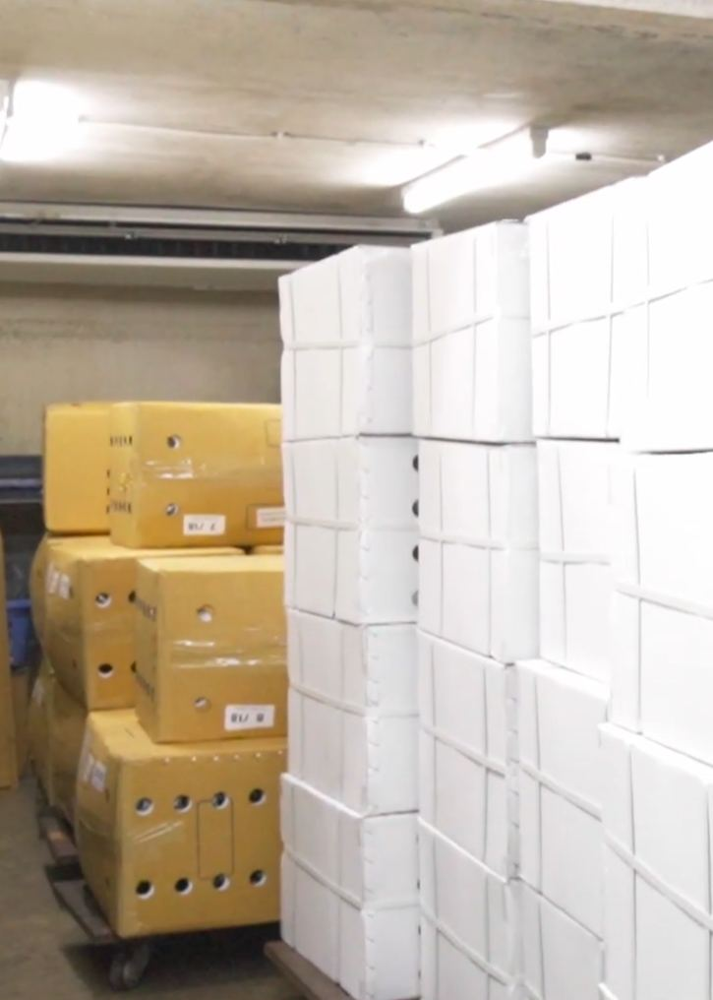

Operación en Colombia
La plataforma ya está lista. Para vender de verdad faltan empresas aliadas, trámites y decisiones que solo puede tomar DSL. Esta guía reúne lo que hay que conseguir, con quién y en qué orden, con la operación basada en Medellín.
La ruta del producto
Cada tramo necesita un aliado distinto. Si falta uno, la cadena se detiene.
DSL ya cuenta con los permisos del ICA para importar la orquídea cortada. En cada embarque solo queda tramitar el documento de requisitos de ese envío antes de que el proveedor despache.
1 · La empresa en Colombia
Sin esto no se puede importar, abrir la pasarela de pagos ni facturar.
El contador acompaña el RUT, los impuestos y la facturación. El abogado revisa los estatutos y, más adelante, los términos de la tienda.
2 · Importación desde Tailandia
Importar orquídea cortada como flor decorativa es viable. Paga un arancel del 5 % y un IVA del 19 %, y no requiere permiso CITES por ser flor de cultivo.
| Qué | Detalle | Con quién |
|---|---|---|
| Permisos del ICA | Listo DSL ya tiene los permisos del ICA para importar. Mantenerlos vigentes y al día con las especies que se importen. | ICA |
| Permiso por envío | Documento de requisitos fitosanitarios para cada embarque. Vale para un solo envío durante 90 días y se pide antes de que el proveedor despache. | ICA |
| Certificado de origen | El proveedor debe enviar el certificado fitosanitario de Tailandia con las declaraciones que pida el ICA, y la ficha de tratamientos aplicados a la flor. | Proveedor en Tailandia |
| Nacionalización | Declaración de importación como carga. No se puede traer por courier porque tiene control del ICA. | Agencia de aduanas (recomendada) |
| Flete aéreo | Ruta Bangkok–Rionegro (Medellín), con escala en un centro internacional, temperatura indicada y registrador de temperatura en la caja. | Agente de carga perecedera |
| Aeropuerto de llegada | Confirmar que el aeropuerto de Rionegro esté habilitado para recibir flor cortada importada con inspección del ICA. Si no lo está, nacionalizar en El Dorado (Bogotá) y llevar la carga a Medellín en vuelo nacional. | ICA · Agencia de aduanas |
| Seguro | Cobertura para producto perecedero y, si existe, para rechazo fitosanitario. | Aseguradora o agente de carga |
Lo más simple ante el ICA es una guía aérea de Bangkok hasta Rionegro, aunque el vuelo haga escala. Según listados públicos, a Rionegro llegan vuelos de carga desde Miami (Avianca Cargo, LATAM Cargo, Atlas Air, entre otras) y desde Ámsterdam (Avianca Cargo); el agente de carga debe confirmar la ruta vigente. Pasar por la bodega de Miami obliga a confirmar con el ICA y con las autoridades de EE. UU. qué certificados se aceptan, y puede invalidar el permiso si el país de procedencia no coincide.
Recomendamos vender al inicio solo como flor decorativa, con la leyenda “no apta para consumo”. Venderla para comer o decorar bebidas requiere concepto del Invima y un proveedor con certificación alimentaria, porque la flor de exportación suele recibir tratamientos con plaguicidas.
3 · Bodega en Medellín
4 · Transporte nacional
Revisamos las condiciones públicas de cada empresa. La mayoría de servicios de paquetería excluye flores o plantas, así que se necesita un modelo combinado.
| Empresa | ¿Sirve para flor fresca? | Uso propuesto |
|---|---|---|
| Avianca Cargo | Acepta flores | Carga aérea nacional de aeropuerto a aeropuerto desde Rionegro hacia Bogotá y otras ciudades. Tiene certificación para perecederos. |
| LATAM Cargo | Por confirmar | Respaldo de Avianca Cargo. Opera terminal de carga en el aeropuerto de Rionegro y en El Dorado. |
| Mensajeros Urbanos | No lo prohíbe | Entrega urbana en Medellín y en Bogotá, Cali, Barranquilla y Cartagena. Confirmar el servicio el mismo día y la cobertura del área metropolitana. Límite de 50 cm por lado y 50 kg. |
| FedEx Colombia | Con contrato | Alternativa puerta a puerta. Su tarifa 2026 incluye recargo por flores cortadas y exige contrato para perecederos. |
| TCC Refrigerada | Con evaluación | Transporte refrigerado con sensores de temperatura, para cuando haya volumen. |
| Servientrega, Coordinadora, TCC paquetería, Envía | Excluyen flores | No usar para flor fresca según sus condiciones publicadas. |
| Deprisa | Cerró | Cerró su servicio de mensajería el 30 de septiembre de 2026. |
| Inter Rapidísimo, 4-72 | Sin política pública | Consultar por escrito antes de descartarlas. |
5 · Pagos
Proponemos combinar medios según el tipo de cliente y el tamaño del pedido.
Pasarela de Bancolombia. Acepta tarjetas, PSE, Nequi, Daviplata y botón Bancolombia, y paga a la cuenta al día hábil siguiente.
2,65 % + COP 700 + IVA por transacción.
Buena opción de respaldo si Wompi no aprueba la cuenta o falla.
3,29 % + IVA con dinero disponible al instante. Menos si se espera 7 o 14 días.
Para empresas con tickets altos: evita la comisión de la pasarela. El equipo verifica el comprobante antes de despachar.
Sin comisión de pasarela.
La plataforma permite vender a crédito de 15 o 30 días con un cupo por cliente. Recomendamos activarlo solo con una política escrita que defina quién califica, el cupo máximo, el plazo, el respaldo (por ejemplo, un pagaré) y cómo se cobra.
6 · Facturación y contabilidad
COP 163.900 al mes, para ingresos de hasta COP 40 millones mensuales. El plan Pro cuesta COP 250.900.
7 · Legal y atención al cliente
Por ser un producto perecedero, la venta no tiene derecho de retracto (Ley 1480, artículo 47). Sí aplica la reversión del pago en casos de fraude, producto no recibido o defectuoso (artículo 51).
Los textos legales de la tienda ya están redactados como borrador. Necesitan la razón social y el NIT, y la revisión de un abogado.
Decisiones de la empresa
La plataforma se adapta a cualquiera de estas respuestas; lo que cambia es el riesgo, el costo y la forma de operar.
| Decisión | Nuestra recomendación |
|---|---|
| Precios en Colombia por presentación | Calcularlos con el costo real puesto en Medellín: producto, flete, aduana, ICA y empaque. |
| Cuántos tallos o flores trae cada caja | Confirmarlo con el proveedor; el sitio de EE. UU. no lo indica. |
| Qué variedades tener siempre en bodega | Pocas de alta rotación con precio publicado; las demás, por cotización o bajo pedido. |
| Venta a particulares | Permitirla, con foco comercial en hoteles, restaurantes, eventos y floristerías. |
| Línea comestible | Esperar el concepto del Invima. |
| Política de crédito | Solo con política escrita y para clientes con historial. |
| Tarifas de envío al cliente | Fijarlas con las cotizaciones reales de las transportadoras. |
| Ruta de importación | De Bangkok a Rionegro (Medellín); como alternativa, por El Dorado y vuelo nacional. |
| Quién aprueba las compras al proveedor | El propietario; el sistema prepara la orden y avisa. |
Orden sugerido
Varios pasos pueden avanzar al mismo tiempo. Los permisos del ICA ya están listos, lo que adelanta buena parte del camino.
Costos conocidos
Valores publicados por cada proveedor a octubre de 2026. Lo que no tiene tarifa pública queda por cotizar.
| Concepto | Valor |
|---|---|
| Arancel de importación | 5 % |
| IVA en importación y venta | 19 % |
| Permiso del ICA por envío | ≈ COP 61.500, por confirmar |
| Comisión Wompi por venta de COP 1.000.000 | ≈ COP 32.400 |
| Software contable (Alegra Pyme) | COP 163.900 / mes |
| Plataforma en internet (servidor, base de datos, dominio) | ≈ COP 100.000 / mes |